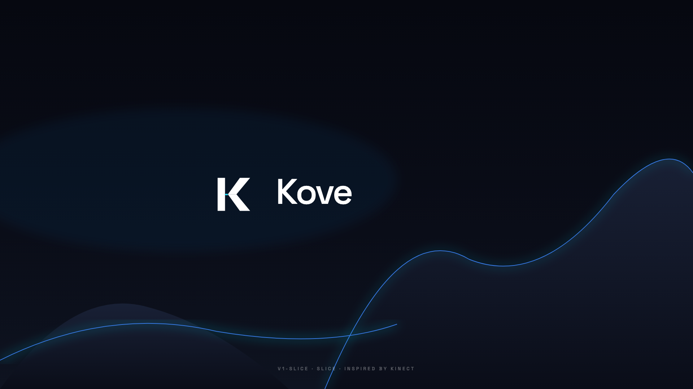
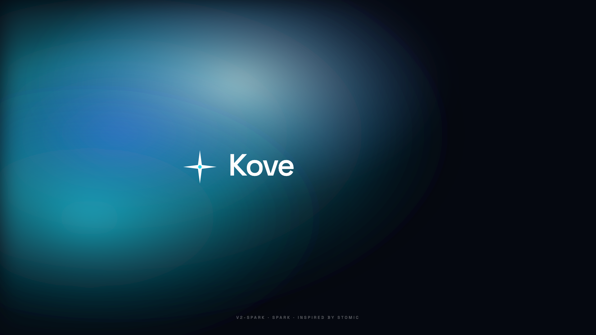
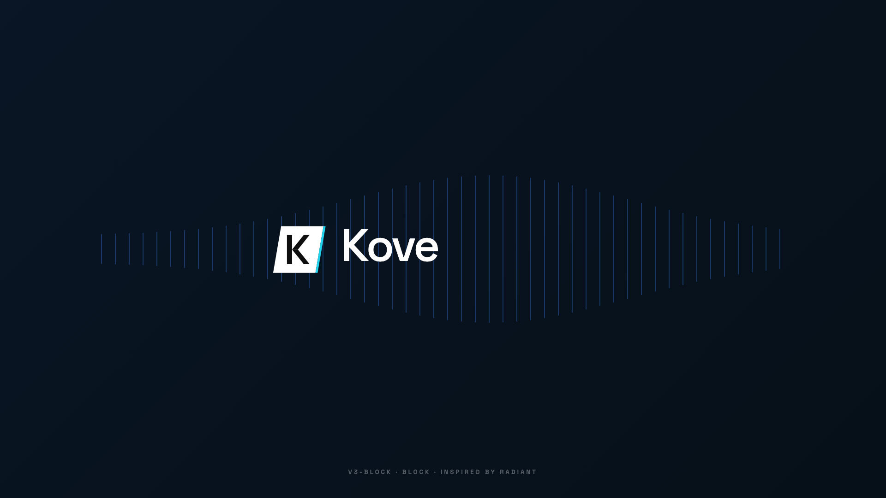
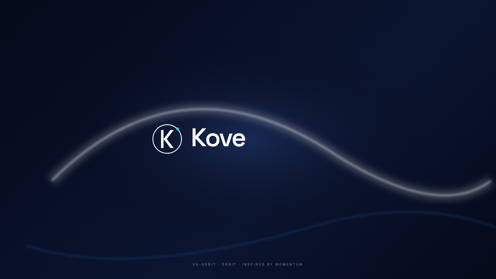

Kove — Logo Options
4 directions inspirées de tes refs. Choisis une à valider, et je remplace les fichiers principaux.
v1 — Slice
brand/logo-options/v1-slice/
Kinect

v2 — Spark
brand/logo-options/v2-spark/
Stomic

v3 — Block
brand/logo-options/v3-block/
Radiant

v4 — Orbit
brand/logo-options/v4-orbit/
Momentum

Décisions à prendre
Quelle variante valides-tu ? (v1 / v2 / v3 / v4)
Tu veux ajuster la couleur cyan (signature) ou garder telle quelle ?
Tu veux que le wordmark "Kove" soit plus épais (Bold) ou rester Medium ?